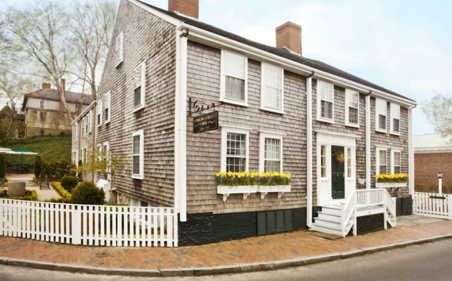
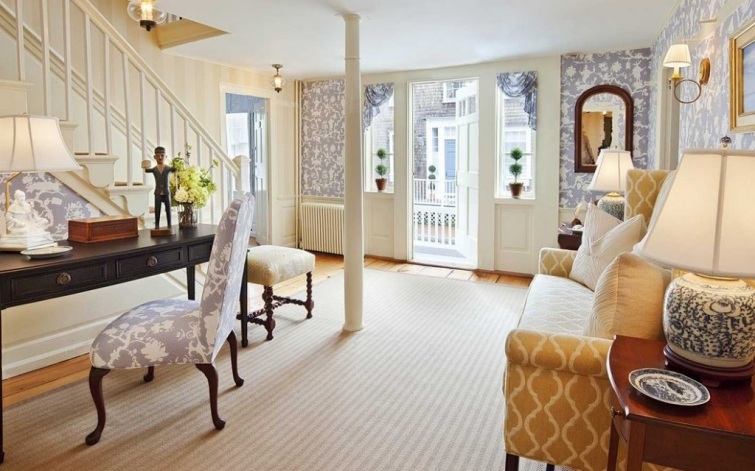
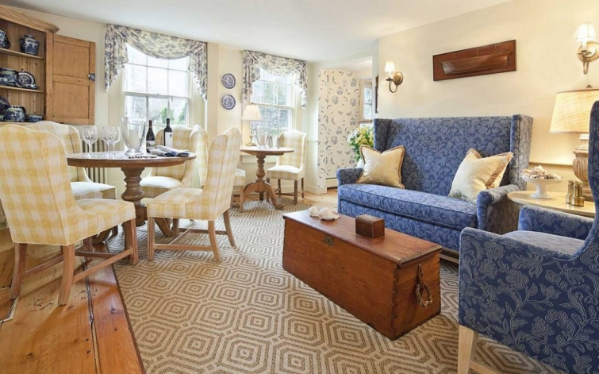

.png)
.PNG)
.PNG)
.PNG)
.PNG)
.PNG)
.JPG)
.JPG)
.PNG)
.PNG)


Everything about Nantucket is old…old houses…old streets…old inns…old sidewalks. You get the picture. Â It is what visitors expect when they visit the faraway island, but visitors also like their modern conveniences – just disguise them to look like they belong with the old. Â 
Well, the owners of one of the oldest inns on the island –The Union Street Inn (built in the 1770’s as a whaling captain’s home)  decided it was time to update their interiors.  And which designer did they decide to call upon to help with this big project?
None other than Trudy Dujardin.   (You did read my post yesterday, right? 🙂 ) She brought in a color scheme of blue and yellow with some accents of red and green.  She added new wallpaper, lamps, designer furniture, art and accessories – but still kept the feel of the old inn.

One of the things for which the inn is famous is its breakfasts.  It is the only bed-and-breakfast on the island that serves made-to-order breakfasts for its guests. I think there is a 4 day rotation in their menu selection. (Gotta love any place with red gingham napkins, right? 🙂 )
The inn also has an afternoon tea, and snacks like home made brownies, cookies, and carrot cake are always on hand. Â (I’m afraid those wouldn’t last long with me around!)
But I know you are saying...show us the rooms; show us the rooms! Â Okay…Here are 6 of the 12 available rooms in the inn…all done up in their Trudy Dujardin finest.
room 1
room 7
room 8
room 9
room 12
room 14
Which one is your favorite?
I like room 12 best, but any would be fine with me! 🙂 (Fodor’s calls it 1 of the 10 most romantic hotels in the U.S.)
Since its renovation, the Union Street Inn has been featured in a number of magazines. Â You can see last summer’s article in Coastal Living here. Â Their grounds were also reworked during the renovation by Marty McGowan of the Sconset Gardener. Â (You can enjoy your breakfast out on the terrace as well as inside.)
When you are ready to make your reservation, their website is here. 🙂
(And all photographs are from here too.)
And just a reminder for you today. Â Don’t forget the Summer Home Tours are still going on this week.
Here is the line up again in case you missed it.
Monday, June 8, 2015
A Stroll Thru Life
Life On Virginia Street
Snazzy Little Things
21 Rosemary Lane
Thrifty and Chic
Claire Brody Designs
Tuesday, June 9, 2015
Thrifty Decor Chick
Our Southern Home
Making Home Base
Hymns & Verses
Bliss @ Home
DIY Showoff
Wednesday, June 10, 2015
City Farmhouse
Driven By Decor
No Minimalist Here
SG Style
Decor To Adore
Desire Empire
Thursday, June 11, 2015
A Thoughtful Place
Monica Wants It
Rain On A Tin Roof
Charming In Charlotte
Remodelando la Casa
Dimples & Tangles
Friday, June 12, 2015
Simple Details
Tidbits & Twine
Design Post Interiors
Designing On The Side
Peaceful Home Decor
Talk Of The House
Hope you are having a great week so far!
See you next time. 🙂


.PNG)
Kelly,
Room 12 is my favorite also because of the fireplace. The blue and yellow combo is so peaceful too. Thanks for sharing some more of Trudy’s style with us! Take care.
———————————————————————-
I have always loved blue and yellow…so fresh! I didn’t even think about the fireplace! Glad you liked seeing more of her work.
Kelly
What an amazing hotel. The rooms are all so beautiful and inviting. I would happily stay in any of them! We have only been to Nantucket once and stayed at the White Elephant which we loved. Hope you’re having a great week!
——————————————————————–
I thought it was amazing too. You stayed at a wonderful place if you stayed at the White Elephant! It is a classic on the island. I would love to stay there as well.
Kelly
Kelly,
I love this inn and more than that, I love the designer. I don’t believe I had ever heard of or seen her work. I can see she will be a new favorite.
I’ve been to Cape Cod, but never visited Nantucket. I believe I would love it!
xo,
Karen
————————————————————————
I’m glad I could introduce her to you Karen. Her work is gorgeous, isn’t it? I think you would love Nantucket too. We should all take a trip there!
Kelly
Lovely. I’ll take room 1. White and so pristine. Love.. love the sitting area with the two high back loveseats and that dining bay is just to my liking with the bench seating and Windsor chairs. I guess I still love that old New England feel. I use to subscribe to Colonial Homes Magazine years ago. I’ve been a traditionalist forever… Oh, to take an east coast road tour vacation…wouldn’t that be fun?! Glad she still kept that Old Inn look.
———————————————————————–
Room 1 is beautiful (as they all are.) I subscribed to that magazine when I was in high school! My then future mother-in-law got me started on it. Yes, an east coast road tour is needed…especially New England’s coast for me.
Kelly
Thank you so much for introducing me to this designer! Now I can say I have a favorite. I love her clean, crisp colors and restful designs. About to order her book.
———————————————————————
I’m so glad you like her work Marken! I like those restful rooms so much too. I hope you enjoy the book!
Kelly
Hi Kelly! Beautiful, eh? You’re right, # 12 is my favourite, as well as #14. How do they get (and keep) the linens so fluffy and white? Sigh.
Always look forward to all your wonderful posts, which truly enhance my day.
Wishing you so much pleasure and good health as you enter retirement.
All the best,
T
————————————————————————-
I was almost tied on those 2 myself. 🙂 I do not know how they keep those linens like that. They would have to wear out pretty quickly with a lot of use, right? I am so glad you are enjoying the posts. Thank you so much for the well wishes for my retirement.
Kelly
Be still my heart!! All that blue and white!! Looks so crisp and cool and relaxing!! I can just smell those air dried sheets!!:) I can see you reading your latest beach novel and enjoying the yummy desserts!! That would be a perfect next adventure for you— hosting a B&B in Kelly Style!! I’d come and stay! I like room with the blue Buffalo plaid chairs– #7. Today on the SH Tours I found how I want to fix my bay window in my living room — showed hubby and he agreed. Yippee! It is Thrifty Decor Chick. May be my fall project!!
———————————————————————-
Ha…I am too old to be running one of those. I wanted to when I was younger, but I don’t move fast enough now to keep up a B & B. Glad you found a new project (although hubbie may not be so glad! LOL) Thrifty Decor Chick does some cool projects in her home!
Kelly
Of course I pick 12! But, all of them are great! I want to go! Now!
———————————————————————
Of course! Great minds think alike. 🙂
Kelly
Beautiful! 12 is my favorite with 14 a close second. Thanks for the info on this designer.Love all your posts.xo
———————————————————————-
My thoughts precisely on the rooms! I am so glad you like the designer AND the posts here Annette.
Thanks for stopping by!
Kelly
Beautiful. Room 12 was my favorite also – nice and cozy but still bright.
——————————————————————–
That’s a good description of that room, Kathy (and probably why we like it!)
Kelly